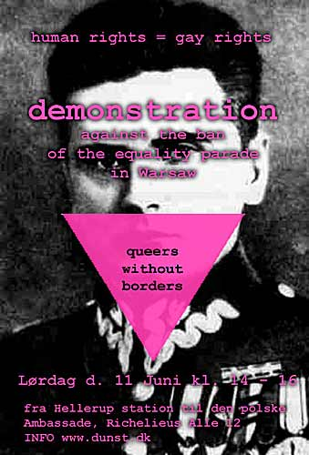

| Demo at the Ambassy of Polen | 11. Juni 2005 |
 dunst holder PRIDE foran den polske ambassade på lørdag som protest mod banlysningen af deres pride, der skulle have fundet sted den dag.Gennem Queeruptions og Queers Without Borders mailinglister det er lykkedes os at mobilisere demonstrationer samtidig foran de polske ambassader i London, Berlin og Barcelona. dunst har lavet et standard varslings-brev, som alle kan sende ambassaderne på forhånd. Hvis du vil være med og har tid, så mød op lørdag kl. 14 ved Hellerup station. |
|